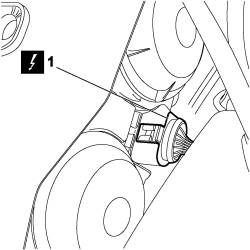
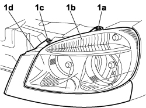
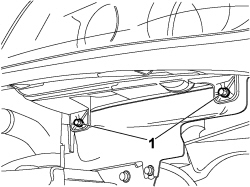
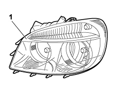

5540B72 FRONT LIGHT CLUSTER WITH DIRECTION INDICATOR (ONE) LEFT OR RIGHT - R.R. WITH INTERFERING COMPONENTS REMOVED
- Path
- Procedures > 55 ELECTRICAL EQUIPMENT > 5540 EXTERIOR LIGHTING > 5540B headlamps > 5540B72 FRONT LIGHT CLUSTER WITH DIRECTION INDICATOR (ONE) LEFT OR RIGHT - R.R. WITH INTERFERING COMPONENTS REMOVED
- Kind
- repair procedure (removal / refitting; the operation number is the code)
- Applies to
- engines: 1.4 8v, 1.6 16v, 1.3 JTD 16V, 1.9 JTD 8V; all production periods
- Interactive page
- https://sloeber94.github.io/elrnDB-fDbl/en/#/223000167
Applies to: engines: 1.4 8v, 1.6 16v, 1.3 JTD 16V, 1.9 JTD 8V; production: da 12/03; only with equipment: MY 2005
 Removing
Removing
 Refitting
Refitting1. Working from the engine compartment, disconnect the electrical connection from the front light cluster.
Description | Connector | |
|---|---|---|
1 | LEFT HEADLAMP |
Description | Connector | |
|---|---|---|
1 | RIGHT HEADLAMP |

Applies to: engines: 1.4 8v, 1.6 16v, 1.3 JTD 16V, 1.9 JTD 8V; production: da 12/03; only with equipment: MY 2005
1. Unscrew the upper bolt (1a) securing front light cluster (1b) and bolt (1c) fastening the under-lamp moulding (1d).

Applies to: engines: 1.4 8v, 1.6 16v, 1.3 JTD 16V, 1.9 JTD 8V; production: da 12/03; only with equipment: MY 2005
1. Unscrew the lower bolts securing the front light cluster and remove from its seat complete with the under-lamp moulding.

Applies to: engines: 1.4 8v, 1.6 16v, 1.3 JTD 16V, 1.9 JTD 8V; production: da 12/03; only with equipment: MY 2005
1. Release from the fasteners and separate the moulding from the front light cluster.

Applies to: engines: 1.4 8v, 1.6 16v, 1.3 JTD 16V, 1.9 JTD 8V; production: da 12/03; only with equipment: MY 2005
Refitting
Removing- Check that the front light cluster is not damaged.
- Couple the front light cluster to the under-lamp moulding and engage in the fastenings.
- Position the front light cluster with under-lamp moulding in its seat.
- Tighten the bolts securing the front light cluster and the under-lamp moulding.
- Connect the electrical connection to the front light cluster.
Description | Connector | |
|---|---|---|
LEFT HEADLAMP |
Description | Connector | |
|---|---|---|
RIGHT HEADLAMP |